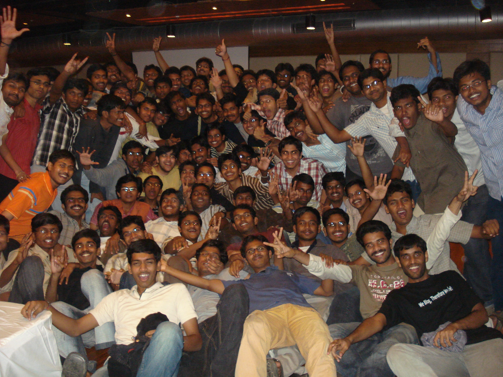

The Yearbook - Commemorating 2005-09!
sana's profile information
Name - sanaBirthday - 16-9-1987
Email - pradeepkumarspk@gmail.com
Address - opp. e-seva, srikaulam
Phone - 9441589811
Hobbies - playing cards, cricket
Memorabilia - felicity-08,09
What would you want to be remembered as - sana
Testimonials written by sana
sana's Album

sana

{kind=link}
best party ever
{kind=link}
Testimonials
Vamshi Velagapuri wrote-" come ra sana..good bowwwwwwling ra.."...captain sana, nenu and team second batting oka package lantidhi..
adina anni matches nenu sana team lo unna...evo okkato rendo tappa...inka chala unnaya mama manaku adukodanki...
sana kasi kukka..first year lo GHEB lo sana japam vinnapadedhi..exams time lo...
racha candidate....
mama inka time undhi neeku testilu rayadanki...prasthuthanki deentho saripettuko..
MS 2 yrs cheyyakapothe neeku untundhi kodaka...
itlu,
nee vam
Chakrapani wrote-
Sana.. veedu chudataniki pottiga untaadu kaani chaala gatti vaadu(pottivadu bahu gattivadu
 )
)
athi bayankaramaina kasigadu...
very sincere in his efforts..hardworking...
a very friendly guy..plays cricket very well..
All the best for ur MS and future buddy!!!
Kiran matam wrote-
e seekulam potte gaadu naaku 3rd sem lo kalisadu ayya..
veedu veedi roomie manchi sincere candidates ...vallu iddari mundane activities timings almost okate...
veedini modhatlo choosinappudu kasi ante ela untundo choopinchadu naku...daily prayer cheyyadam , weekly temple ki velldam (sodi gadu nannu pattukelle vadu) , treating all of them equally , helping the needy , giving value to friends (even to the itemest)...are some of potti sana's good qualities...
the discussions you,pappa,veekass and I had during the 4th sem , the dirty things we used to do , teaching lessons to pappa, long talks we had(for time pass) in your room , the activites our gang of four(ram, potti, baatu bacha, I) did gives me a pleasant simle...
I like a lot of qualities in him as our thinking was parallel in many a things..
veedu born shetti... veediki money ichhi business cheyyamanandi avi peruguthune pothayi
 ... chala alochinchi spend chestadu
... chala alochinchi spend chestadu  (I like it)...
(I like it)...
veedu cricket baga aadathadu(captain sana)... batting item kani bowling baga vesthadu(naa favourite bowler)...
he is proactive in many a things whether it may be in sports, cultural events... he is one of the popular guy from ece(kontha mandi item anukuntaaru anukondi)...
ammayila tho chatting, photography , item item item telugu cinemalu serials choodadam veedi hobbies...
starting lo argument baga chesevadu..tarwatha tarwatha argument lo sodi ekkuva ayyindi (ofcourse mana edavalu vadini ala tayaru chesaru anukondi).. hats off to his patience when arguing with people
..
you are one of my best friends....stay in touch(ofcourse we will)...
Prashasti Gupta wrote-
hey..
All I know is that he is a very helpful person..he has helped me a lot in organizing vayu events
...
Thanx a lot for helping me out

All the Best
S.Rama Krishna Raju wrote-
"Sheik Sana from seekakulam"
Veedi gurinchi entha cheppina thakkuve.
Amayikudi laga kanipisthadu kani.. kurradilo chala vishyame undhi. Rajani Kanth felicity lo veedu chesina fight chusadante, pette peda sardhukoni intlo kurchuvalsindhe..
Cricket captaincy baga chesthadu and bowling baga vesthadu.
Dual degree lo he is one of the "buddimanthudu" kind of a boy.
M.S ki all da best mama!!!
Nagarjuna Pavan Kumar G wrote-
maakunna memorable scenes kosam veedu naaku raasina testimonial choodandi...
coming to sana...memu muddugaa pottodu ani piluchukune veedu rocks...manchi energy untundi veedu maato unte...veedu oorikelte chaalaa miss avutaam(n)u....first year nunche maaku decent relation undedi...taruvaata adi strong ayyindi....
memu tirigina trips,spend chesina time kallaku kattinattu cheppatam evvari taram kaadu...
veediki konni strong sentiments and ideals unnaayi...actually avi choosevaallaki chaadastam laa anipinchinaa sincere gaa follow avutaadu...aa pattudala undaali raa....
inkaa aatala vishayaanikoste veedu almost anni games okasaari alaa chuttesi vacchaadu...chooddaaniki anta personality lekapoinaa cricket mast aadataadu..especially bowling and fielding....batting gurinchi adakkandi
veedu chaduvulo manchi kasi gaadu...ippudu konchem fervor taggindi...ayinaa exams meeda baane concentrate chestaadanuko....
maa madhya intlo vishayaalu koodaa baagaa discussions jarugutaayi...gudikeltaam...tirugutaam...inkaa chaalaaa unnaayi.
orey!!!kashtapadi kaasta research chesi manchi thesis raayi....akkada nunchi automatic gaa kummukovacchu....
i am surely gonna miss you all raa....
have a great time....
yours,
nagarjuna...
PS:research gurinchi kartheek gaadini keluku..boldanta info cheptaadu...enjoy ur research...
UmaMahesh.Allenki wrote-
sana @ potti @kasi @ @...... ila chala perlutho pilistham veedini .
. veedi valla naaku chala mandi frnds ayyaru .vikas , ravindra , kiran , rama reddy , goutham etc.. sana vallane frnds ayyaru . mari manavadiki appati nunche antha network vundhi . first year lo veedu veeditho thirige batch ni chusthe naaku ala vundali anipinchede . chala cool ga vuntadu . entha mandi kalisi veedini adukunna veediki kopam raadu. thats y i like his frndship. cricket lo bowling , keeping, fielding baga chesthadu. TT ga baga nerchukunnadu . veedi kasi chaduvulone kadu annitlo chupedthadu. veedi kasi ki
example for his kasi:
Aaroju naku baga gurthu vundhi . kothaga nagarjuna,sana beginners ga swimming lo join ayyaru.sana kasiga agakunda voddu varaku okesari cheralani fast ga eyes muskoni swim chesthu godaku guddukovadam valla chaala blood vachindhi.
 . appude naku thelisindi veediki anitlo kasi vundhani.
. appude naku thelisindi veediki anitlo kasi vundhani.
sana manam kalisi chesina architecture presentation gurthundha ?? It was an awesome presentation for which julu personally called us and appreciated us in some another way.

finalga oka vishyam aduguthunaru. nippu lenede poga raadu adhi neeku kuda thelusu kada . direct ga vishayanaki vasthanu . neeku ki**n ki madhya vuni relation nijamena.
arey chala mandi thappu chestharu lera nuvvem feel avaku.
finalga nuvvu MS late ga chesina manchi thesis tho ne MS awalani korukuntunnanu ra.
touch lo vuntanu ra !!
ALL the best ra !!!
M.Bhanu Chandra wrote-
Sana aka kasi aka potti
Smily face , silky hair , n ultra active in starting an argument.
Oksari edina modaledithe, avathalodi maata vinadu inka , vaade correct ani fix avuthadu-- hehhe.
full kasi ga chaduvuthaadu exams lekunna.
Exams ki eppudu oka lucky t-shirt n pant ee vesthadu .
Full sentiments veediki --- aaamadyalo exam ki pad kuda pattukellevadu sentiment ani.
Veedu Vaadi laptop lo movies chudadu ,adedo crime chesinattu feel avuthadu---- Kaaani vere vaalla lappy's lo ithe k [
 ] []
] []
Cric lo bowling baa vesthadu.
Chaaaala ante athi careful ga behave chesthadu.
Paapam goutham counters ki roju baliavuthuntadu , parledu mama atleast maaku njoyment--hehhe
Full of humour n sarcasm .
Njoyed all these days mama
All the best for ur MS ra
goutham wrote-
Sana.. the most hyper active guy of our batch..he always remain in an excited state.. always smiling.. no matter how much u irritate him.. but its not difficult to make him angry if u just pull the correct chords
 .. but remember the 3 most dangerous things (in increasing order are) :
.. but remember the 3 most dangerous things (in increasing order are) :
Making sana angry

Disturbing him when arguing with someone
Arguing with sana
He is the ultimate kasi of our batch.. during exams he doesn't exhibit a normal human life
.. after exams he enjoys as if it's the end of the world  .. he is so modest that he doesn't agree that he had written the exam excellently..
.. he is so modest that he doesn't agree that he had written the exam excellently..
this kasi form is only limited to the exams..when it comes to the project he keeps his cool and maintains the IIIT slogan (lite ra mama)
Always sits in the first bench.. asking doubts (ideal student). He is an excellent friend.. gives value to friend..he is a man of ethics and morals (shit.. I still don't know the difference between these two
) and lectures me whenever i say something bad 
He is a fast bowler though he doesn't look like one.. he always becomes an item to make us laugh
.. always goes home whenever prof asks us to meet  ...
...
We had a lot of memorable moments together
PS1: hoping to see sana changing to sheikh sana
PS2: its time to stop ur seed business
PS3: hope god gives u some sense to use for ur arguments

PS4: don't take turns at a speed of 60kmph
PS5: we want to see ur marriage ra (with you know who from sheekkulam)
PS6: hope that sheekkulam becomes our country capital..and **ya dance becomes world recognized
PS7: nee fight keka ra..
PS8: plz teach us ur famous **** saving exercises
PS9: bike koncham jagratha ga park cheyya ra ra
goutham wrote-
this is a test testimonial plzz ignore
Hari krishna wrote-
first day to ashakiran,
pillalandaru veedu raaganey lechi wish chestaremo
, veedu cheppindey vedam laaga ,koncham pedarayudu type anukunna,akkdachustheyy reverse 
sana: arey numbers raayi
kid1: nakochu sir, nenu rayanu
sana:narasimha,ila vachi kurcho
kid2: nenu adukunta sir.
ilaa veedu cheppey maata nenu thappa yevaru viney vallu
kaadu(nenu vinaka pothey frustration lo yem chesukuntado yemo ani naa baadha )
alaa ani veedu soft kaadandoyi, chudadaniki Amul bottle meeda chantodi laaga untadu, kaani veedu "Sana from seekakulam".
yenthayinaa vadi fan ni
, andukey ikkaditho vaadi gurinchi aapesthunnanu
Hari krishna wrote-
Sana
, vaadey mana madya atuu ituuu thirigey oka chota alien .
P K sana ,
aa peru vintuneyy naaku navvu aagadu 2nd year lo GHEB lo ki room shift ,ikkadantha kasi galu untaru yevaro annaru , kasi gallu ani kondaru untaru ani vinadamey kaani yeppudu chudaledu  , yela untaru anukuney vanni
, yela untaru anukuney vanni
cut chestey antha loneyy okadu banyan , 3/4 pant vesukuni kanipinchadu
, naa pakkanudey vadu "veedu oka kasi gaadu "ani cheppadu .nenu alaa chustuney undipoyanu ,cut chestey sana (kasi) ku fan ayya .
yevaranna hostel lo friends avutharu
, lab lo friends avutharu, classroom lo freinds avutharu
, memu matram atuu ituu ways cross avuthhuuu road meedey meet ayyi, mataladukuney vallam
.
ila ney konni nallu vadi gurinchi goppagaa imagine chesukuntu
gadipestunnappudu , a call from sha2nk . skit veddam, sana also there ani.modata shock , tharuvatha navvu auto matic ga vachesayi.
ye scene iddama ani sana ki ani tension
, krishna (vaadu sana antha range kadanukuni vaddanukunnam ),mahesh babu(sana marii height kadaa andukey no chance anukunnam ), inka yem cheddam anukney time ki, rajni fight ni sana "cooooool" antuu thisukunnadu.appatinundi hero lanti memantha skit lo vaaditho picha picha gaa thannulu thintuu thintuu,alaa kaadu sana ila kottu baguntundi ani marii cheppi thannulu thiney situation vachindi .vadi stillstho , PK sana , SANA KANTH gaa avataram yethadu.
cut chestey manodiki ilaanti alavatley kakundaa ashakiran lo oo peru mosina active volunteer
ani vini,nenu kuda voluteer ayya(yenthayinaa vaadi fan kadaaa ).Karan wrote-
Pradeep Sana Rohit B 1 1 6 - - 2-6 5.14 3.00 2
Picked this up from http://web.iiit.ac.in/~mahaveer/IPL/highestwickets.html
Dude.. I can never forget that over, superb match turning bowling! You dismiised our captain Pagare and the pinch hitter Gupta, just like that. Wonder why I've never seen you in any house practise sessions!
I'll also remember for his wide smile. Never seen him agitated or pissed. Keep the smile up mate! He is a very popular guy, as you can often hear the cries of "Sana.. Sana"!
May God bless!
Fav memory: The IPL match
Peace.
Vikas Reddy wrote-
Only one adjective suffices for describing this guy -- "Kasi". But there is more to him than meets the eye. Also called as "potti" sana, "sheik" sana, "SHIT" sana, "kasi" sana, "pee kay" sana, "shetty" sana, "item" sana and "kasi" ____a, he is an ideal child any parent would crave for, an obedient student any professor would search for, a friendly friend any friend would wait for and a trust-worthy lover any girl would die for. And believe me, I'm not exaggerating. Ladies and gentlemen, lemme introduce to you a great friend of mine and my roomie in IIIT-H for more than two years, THE GREAT Sana alias Pradeep Kumar Sana.
Being a very stubborn guy, no body dares to argue with him or tries to talk with him when he's in an argument with other person. He tries to win any argument, by hook or crook. And in the process becomes an "item" (that's a different story altogether
). He's one helluva hard-working and sentimental guy you could ever come across in the 21st century. Aggravating it further, he is a vegetarian for 4 days of the week . Praying god for 10 mins daily, going to temple weekly, fasting monthly, wearing only one pair of clothes (read lucky/sentimental) to all the exams are few acts that make him seem an alien to our college . And in spite of all these, within very less time you'll become so attached with him and addicted with his friendship that it's difficult to part with even if you wish to (I won't ). Being a room mate to him for 2 yrs without any issues is a testimony to that.
I don't know how many times we teased him using his hometown's (Seekakulam
) name, his height and his project under M.B. but he never lost his cool. Keep it up dude!
He's very good at academics
and at the same time a very good cricket player (and a captain too), actor (we won't forget the Rajni's fight sequence in skit) and stuntman .
You've got an amazing smile. Keep smiling!! All the best for your MS ra. Be what you are. Hope you divorce with M.B. and get out of this place asap.
Kiran Neelisetty wrote-
Sheik Sana Bhai...The fastest and the most dangerous bowler of UG2k5..
(konchem ekuva aindhi lee)
he tries to bring an impression that his height doesnt affect his fielding..but fails to do so
He appeals for each n every thing and that way he is a livewire in the ground...vadu lekunda cricket adadam chala bore...
coming to other matters,
he is fun to be with,I still remember his tyson look in a tight Tee shirt...
And im very lucky to have one more year with you...hope v will have a nice time...
G. Rohit Bharadwaj wrote-
Sana,
one of the highly energetic guys of our batch. With a smile on his face, with itemness in his acts
, with style in his attitude (Rajni ), he adds the extra charm to whatever environment he is in. be it ground, mess, classroom etc.
Is dualite and so have extra time to spend with him... looking forward to spend quality time with you
all the very best ra.
cheers,
rohit
shashank lagishetty wrote-
Pradeep is a nice guy. pradeep??? who is pradeep?? most of his friends think for some time who is pradeep because no one calls him like that except while taking attendance. His pet names are "sana", potti, potti p***a, "potti sana", kasi sana( i stored his contact with this name in my cell), and recently he got "rajni anna".
Sana is very superstitious, religious,discipline, clean short boy. He is also a good captain in cricket as he sacrifices his batting and comes as tail-ender.
Sana tho restaurant ki vellodhu, anni vadiki ishtamana vi order chestadu, we cant do anything. sana anavasaranga money karchu pettadu.
Sana next year nunchi manam mess ki kalisi vellali so podduna tondaraga levadam practice cheyyi.
Kranthi Reddy. B wrote-
he was my neighbour in my first year, sincere, hard working ...inka clear ga cheppali ante...kasi naa konde gadu...aa 1st yr morning ee lechi neat ga snannam chesukoni...vibbudi pettukoni...pustakam pattevadu...exams mundu veedi face lo tension uttipadutadi...emi radu annatu build up istadu...exam rassi vochi challa sallu feel avutadu...inka better ga rayyavochu ani...nee kasi gudda...
cricket ani padi chastadu...grnd lo guarantee ga untadu ...captaincy baga chestadu...always plays to win , kodiga short tempered...
nuvvu felicity lo chessina drama role kekka ra...asallu anta talent pettukoni inni rojulu ekakda dakkunrav potti naa kodakka ???
sentiments baga ekkuva...temple ki naaku thelisi veedu visit chessinantha iiit lo evadu chessi undadu...devudinee emi korukuntado thelidu kani...chilkur ki regular visitor...
birthdays celebrate chessedappudu baga racha chestadu ... ellago allaga chessi veedu item ayyipotadu last ki ...evadi birthday ayyina veediki bumps frequent ga padutayyi...bumps paddakka veedu full level lo eggurtadu ...
all da best ra...kodiga naa tho pattu undu MS chessedappudu...edo thoraga complete cheyyali ani cheyyaku ra kasi...
Sunil Soni wrote-
kasi sana - pedda kasi gadu .... enta cheppina oppokodu ... inka examples istadu prove cheyadaniki kasi gadu kadani ..
i came to know abt this guy more during cricket ... captaincy rocks .... "fun for all" - most important ... and i also remember him during the felicity times when he used to imitate ppl on stage ... this guy gotta lots of humour ....
this guy is again short-tempered like me
kopam chala tondarga vastadi .... kashta padtam sana ee quality marcha daniki ... maruste nakuda konni tips ivvu
u will always be remembered as kasi sana ....
wish u al d very best dude n keep rocking ...
Bhanukiran Vinzamuri wrote-
Sana. He is a great guy. He has a very simple life style and loves mixing up with people. Eventually all his friends try to make a bakra out of him but he takes it very sportively. He is extremely good at acads. He is blessed with silky hair
( Pantene ad ivvachu ) and has a nice soft speaking tone which makes people dominate sana easily but you know mama nenu ninnu eppudu ram,goti laga aadukoledu ani .
All the best for your MS sana. Be the same forever
Srirang Ranjalkar wrote-
According to me, potti sana
is the koooooooooooooooooolest lad in IIIT. Nenu ninnu potti antunnanenti anukuntunnava? Nuvvu naa kante potti e le
Almost everyone knows that Sana and Kasi (
 ) are synonyms. but he'd never agree. Nevertheless, his kasi isn;t enough to call him a g33k. He's gt an awesome awesome (this is not a typo. I wantedly wrote awesome twice) sense of humour and no one would ever feel bored in his company.
) are synonyms. but he'd never agree. Nevertheless, his kasi isn;t enough to call him a g33k. He's gt an awesome awesome (this is not a typo. I wantedly wrote awesome twice) sense of humour and no one would ever feel bored in his company.
An awesome cricket player too. An awesome captain. He always chose me in his team and always made sure that every player gets batting or bowling and no one is left behind without entertainment. He's the one with the attitude: losing/winning is just a part of the game what matters is did everyone enjoyed the game or not. A biiiiig hats off
to that spirit of yours dude.
Also Sana has a golden leg. In IBCT finals 09, it Sana because of which a long partnership came to en end. Rajini skills upiyoginchadu
From Rajini, I remember the stage shaking, stage breaking, mind blowing (and all other adjectives ..) performance given by Sana on Felicity 3rd day. I just can't describe in words how suppppppppppppperb your performance was. It was almost like Rajini came down to IIIT and performed for all of us on the stage
. What a lovely performance man! A to your talent dude.
He's very active when it comes to giving bumps. But most of the times ends up getting more bumps for himself than the birthday boy.
Will miss you a lot buddy.
. Will miss all the matches that we played together.
Only message for you: You are awesome .
All the very very very best for your MS and your future as well. Keep rocking as always. And never forget me
.
Love
DJ Ranga.
V.V.Chaitanya Krishna wrote-
He's one of the first persons i've met in campus. During the first 2 years in GHEB, he used to be one of da first few ones who wake up early,go to PT, come back to have the first shower of the day in the floor. He's one guy to invoke activity in ne gathering wer he's present. Either by being a victim 2 sattires by "gopu"
or being the creator of sattires on his "soul-mate" kirku, he always makes sure tht the environment arnd him is filled up with joy.
Perhaps, I mite describe him as shortly as his height is
. The better version mite b with the girls @ srikakulam The craze he has in der is truly mind-blowing! neone wud think only one thing--"Pottodi ki intha scene unda??". But the chats he does wid the girls in his hometown and the fact tht sumone in the campus gave her mail id widout even he asking 4 it , reveals this concealed trait in him His idea of becoming a "sheik" and getting named as "sheik sana" is sumthin i can never forget
But on serious note, he's a gr8 guy 2 b with. He is very understanding, gives utmost values to sentiments and makes sure that his frnds r happy
The way he takes all the sattires showered on him by big-wigs like "gopu" and almost all the times,giving a smile as reply is simply gr8 I hope he gets a better person as his prof and finishes his thesis soon ( jus as his "KASI" wud drive him ).
I'll definitely miss u wen i'm out of campus dude
will meet ya often neways....
Raja sekhar reddy A wrote-
sana chala manchi frend , cricket captain, maa branch ee , best wishes dude
Arun M.S.C wrote-
small ayina picha active guy..nice friend..hope you continue doing well in future..
Rama Reddy KNV wrote-
Nd how cud i conclude dis testi widout describin our xam xperiences !! Sana goes into a completely diff personality in da xam tym .. Makes library his adda and brings along his lucky pad to the xam ( i didnt mention da othr1 .. so li8 teesukora potti ) .. But i dont care watever he does as long as he sits behind me in da xam .. Escapades frm Venki , Jawahar , Somapaul ; i can nvr foget dem..
PS : Kiran gaadu edo cheptaadu be .. vaadi maatalu pattinchukoku .. manam manam ECD
Rama Reddy KNV wrote-
Some intelligent guy once said " Friendship is all abt sharing ur similarities and celebrating ur differences"
I think diz was wat happened wid sana 'n' me .. the 4 years though v didn't concur on many things; v never let those affect our friendship ..
Coming to how it all started in the first year on the first day of my class a small guy ( who looked lyk secondary school student ) was introducing himself jovially to all the ECD bakras saying "My name is Pradeep " (now dont ask me who he is ) From dat day on he never let that enthusiasm die and carried it along for all the four years .. Both of us form the "potti dhoni" and "mass yuvi" pair in da cricket ground and the number of times v lost is jus one less dan number of classes taken by his so called 'mentor' M.B.Srinivas in our entire semester .. Used to play as forwards in futbal for our batch in first year but hav no idea y he quit ( naa laaga roju goals kottadam kashtam be ).. inka park cheyyabothu bikes ni crash cheyyadam ; gantalu koddi chattin cheyyadam ; photolaki keka keka phoselu ivvadam ; item telugu movies cam prints chudadam nd hindi movies ni subtitles tho chudadam Chinna Sana vaari bulli hobbylu..
Sana to me is friendly to the core , active 24 X 7 , deep thinker , responsible , sincere devotee (goes to temple evry weekend) and stubborn (nobody is perfect le ra..not even Pedda Sana ) .. v ver da integral part of a so called dream team whch had the potential to reach the main stage of felicity in antakshari but 'vidhi aadina naatkamlo memu rendusarlu bali ka bakralamu ayyamu'
.. But v finally made it to the main stage of felicity thru our skit nd "rajni sana " & "remo reddy" again bcame a hit pair .. Da moments during da skit practice ver da moments v vud lyk to savour nd cherish 4 a longtym .. (remember da 4 hr long BC in Raju's room??! ) ..
[contd]